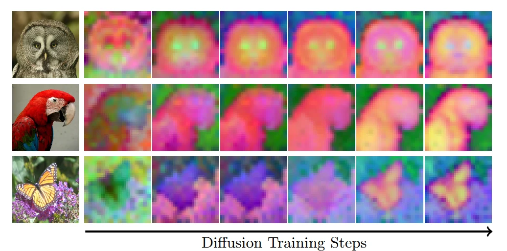
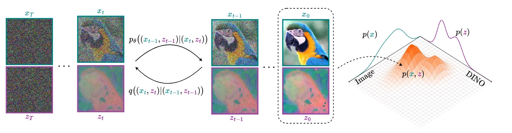
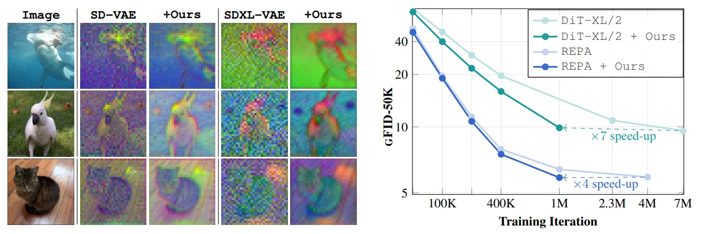

I am a 3rd year PhD student at the National Technical University of Athens and a research fellow at Archimedes AI, advised by Nikos Komodakis and Spyros Gidaris. Last year, I interned at Runway with Jon Granskog. Not so long ago, I obtained my Diploma in Electrical and Computer Engineering from the same university.
My research sits at the intersection of Generative Modeling and Representation Learning. These days, I mostly play around with diffusion models — both image and language.
Coevolving Representations in Joint Image-Feature Diffusion

Boosting Generative Image Modeling via Joint Image-Feature Synthesis

EQ-VAE: Equivariance Regularized Latent Space for Improved Generative Image Modeling
